PORTFOLIE
Hvem er jeg?
*

Multimediedesigner på 1. semester
Mit navn er Rebecca Andersen, og jeg er 22 år gammel. Jeg studerer Multimediedesign på KEA, hvor jeg har fundet min passion for at kombinere kreativitet og teknologi.
Jeg har altid været en kreativ sjæl og elsker at skabe og udvikle idéer. På min uddannelse har jeg især fået øjnene op for kodning, som giver mig mulighed for at omsætte kreative tanker til funktionelle og brugervenlige løsninger.
Jeg er detaljeorienteret og går aldrig på kompromis med kvaliteten af mit arbejde. Jeg trives i teams, hvor samarbejde og fælles indsats skaber de bedste resultater, men jeg er heller ikke bange for at tage ansvar og kaste mig ud i nye udfordringer.

Programmer som jeg bruger
Jeg har erfaring med Creative Cloud, som jeg aktivt har brugt i min undervisning og projekter. Primært arbejder jeg med Adobe Illustrator, Photoshop og Premiere Pro, hvor jeg skaber alt fra grafisk design og billedredigering til videoproduktion.
Jeg bruger Figma til at organisere og dokumentere mine arbejdsprocesser. Det er et vigtigt værktøj for at skabe prototyper, visualisere designidéer og sikre et struktureret workflow i mine projekter. Figma er også ideelt til gruppearbejde, da det giver mulighed for samarbejde i realtid, hvor flere kan arbejde på samme projekt samtidig.
Jeg bruger VS Code som mit primære udviklingsværktøj til at skrive og organisere kode. Det er et fleksibelt værktøj, der gør det nemt at arbejde med forskellige programmeringssprog, og med dets mange udvidelser er det ideelt til både individuelle projekter og samarbejde i teams.
Kompetancer
HTML, CSS, JS
Adobe Illustrator
Adobe Premiere pro
Ideudvikling
Videoproduktion